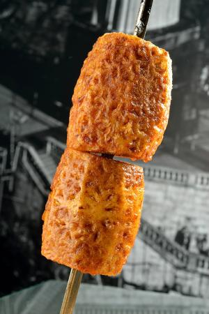

Brazilian Rotisserie Pineapple
Yield: Serves 6 to 8
Ingredients
- 1 whole pineapple
- 1-1/2 cups granulated sugar
- 2 tablespoons ground cinnamon
- 1 teaspoon ground cloves (optional)
- 1/2 cup coconut milk
- 1 cup whipping cream
- 3 tablespoons confectioners’ sugar
- 2 tablespoons cachaça (or white rum)
Instructions
- Twist the crown (leaves) off the pineapple and carefully cut the rind off the fruit. Using a sharp knife, make a series of spiral cuts to remove the eyes.
- Place the sugar, cinnamon, and spices in a bowl and stir to mix.
- Set up your grill for spit-roasting and preheat it as hot as it will go.
- Thread the pineapple onto the spit crosswise. Working over a tray, brush the pineapple on all sides with coconut milk, then sprinkle with the cinnamon sugar mixture, crusting it evenly.
- Spit-roast the pineapple until darkly browned, 5 to 8 minutes. Slice onto plates. For authenticity, reapply sugar and roast again until all fruit and sugar are used up.
- If desired, serve slices with whipped cream flavored with cachaça or white rum.